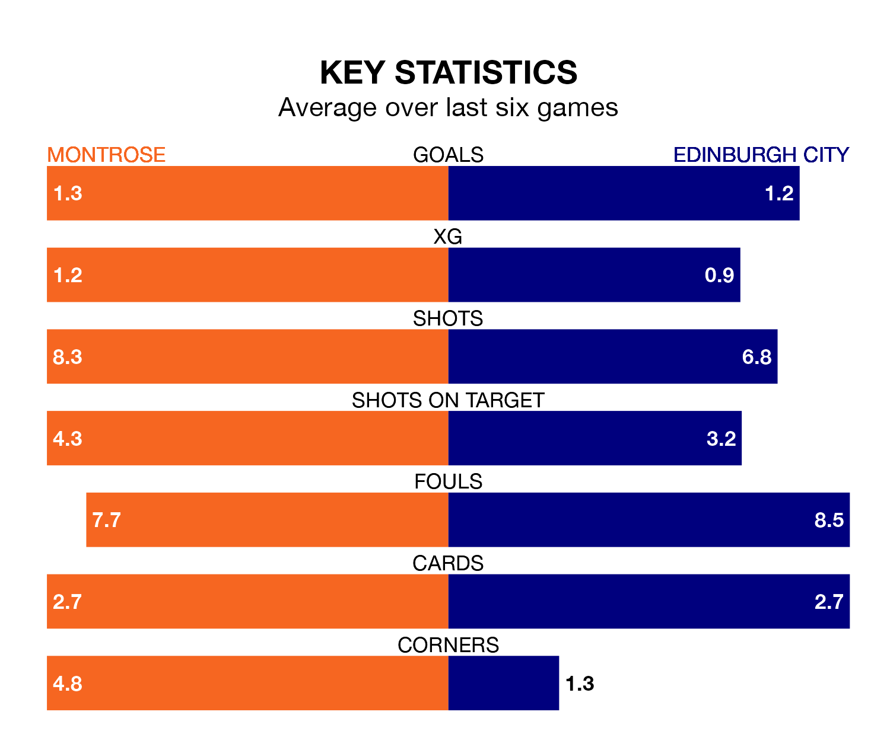

Mid-season relegation candidates Edinburgh City face a challenge away against high-flying Montrose at Links Park on Saturday.
Edinburgh City are rooted to the bottom of the League One table, and have picked up just two wins and four draws in their 22 games to date.
The Gable Endies, meanwhile, are fourth in the standings with 30 points, having won eight and drawn six, and are 26 points behind table-toppers Falkirk.
Montrose are in mixed form in League One, with one win and four draws from their last six games.
With no wins and a draw over that period, Edinburgh's form is much worse – they have taken one point from 18, compared to the Gable Endies's seven.
With 27 goals in 22 games so far this season, City are the league's second-lowest scorers with 1.2 goals per game. And they are conceding more than average, letting in 62 goals at a rate of 2.8 per game.
The hosts, meanwhile, are average scorers, with 1.5 goals per game. They have also conceded 1.5 goals per game.
In the last 10 years, Montrose and Edinburgh have played each other on 15 occasions. Montrose won nine of them, Edinburgh two, and they drew four times.
On average, the Gable Endies scored 2.3 goals and Edinburgh 0.9 in those matches.
Their last meeting was on November 25, when Montrose won 3-0 at home.
In Robert Mahon, the away side have one of the league's most on-form strikers so far this season. He has notched seven goals in 16 appearances, to sit fifth in the scoring charts.
Montrose's top scorers, with five goals each, are Craig Brown and Kane Hester.
Montrose's last match was on Tuesday, a 2-0 win against Stirling Albion, with Graham Webster getting the goals for the Gable Endies.
Edinburgh lost 3-0 against Kelty Hearts last time out, on February 3.
Updated: 11:43 (UTC), 08/02/24